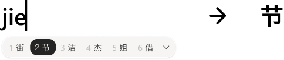
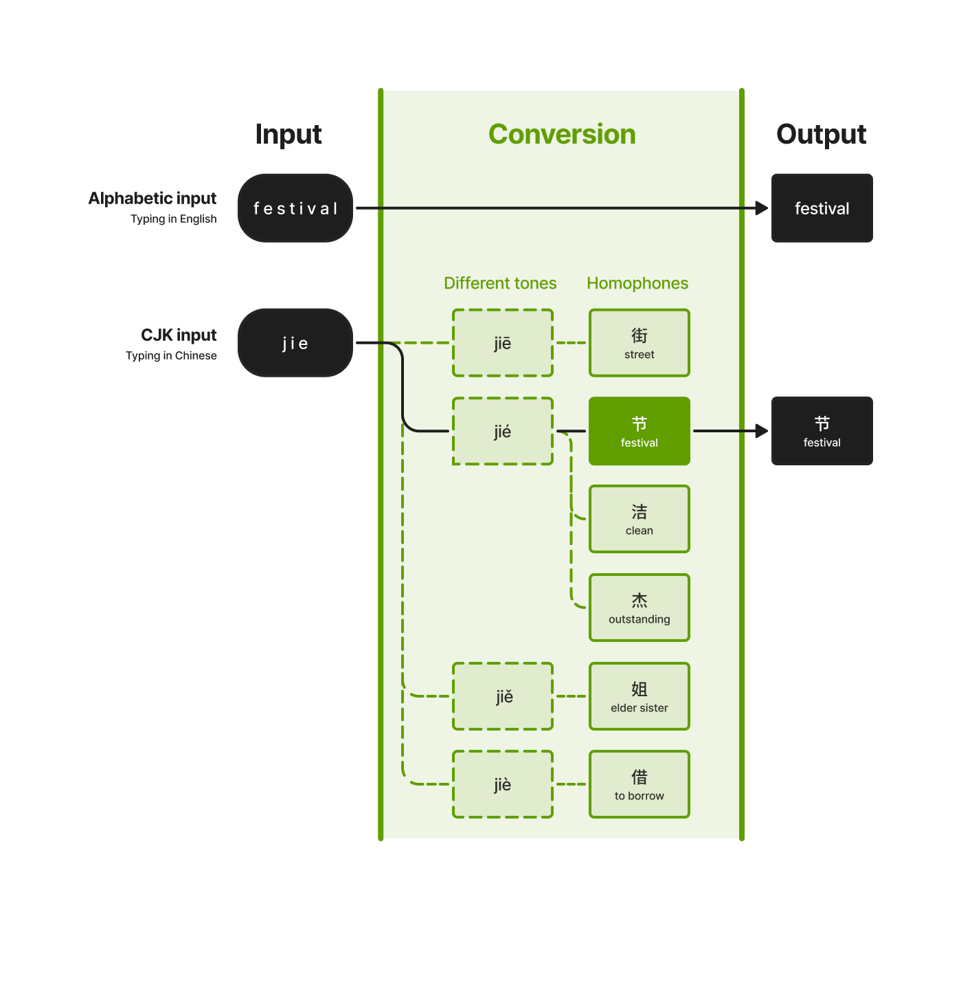
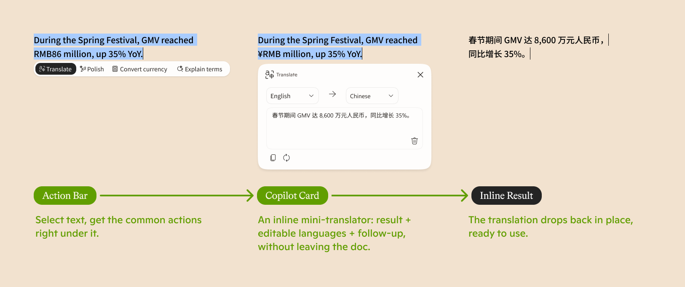

Copilot IME
Put AI at the input layer — where intent is born, before it's ever sent to any app. From “Open app → Ask AI” to “Express intent → AI acts.”
Why the input method?
People touch the keyboard all day — and the layer behind it, the input method (IME), is what you can actually own and ship. Putting AI there is a deliberate bet on reach, timing, and distribution.
Put AI at the input layer and you catch intent at its source — before it's ever sent to any app. Four things make that surface uniquely worth owning:
You touch the keyboard in every app, hundreds of times a day. No other surface has that reach — or sees as much of what you're doing.
LLMs lift input far beyond autocomplete — iFlytek's AI input is the proof case.
Split out from the OS, the IME ships and iterates on its own — and sits inside every app without asking each one's permission.
For Chinese, Japanese, and Korean users the input method is already indispensable — the perfect place to start.
Where should AI enter?
A standalone app you go to, or something built into the workflow you're already in? Each model gets something right — and each pays for it somewhere.
- General-purpose — handles any task, not one domain.
- No trigger — nothing reminds you to open it.
- No context — it can't see your data or task.
- Locked to one scenario — no cross-app, general help.
- Auto-triggered by the workflow itself.
- Already has the surrounding context.
The IME is already an intent surface
CJK input isn't about typing letters — it's a two-step act of expressing a sound, then choosing a meaning. That existing behavior is exactly the seam AI can slip into.
In Chinese you don't type letters — you type a sound, then choose the meaning.


One keyboard, many triggers
Each feature is matched to the trigger that fits its intent — passive when the touch is light, deliberate when the intent is heavy. Hover to trace the link; click to pin it.
Interactive · hover a node to trace, click to pin
Two ways AI lives inside the keyboard
An embedded entry point for expressing intent as you type, and a read-write assistance layer for acting on any text in place — both without leaving the line.


We layered in a lot of intelligence — recommendations, inline answers, quick actions — yet deliberately shipped no new UI pattern. Every capability reuses the candidate bar, the one surface every Chinese user already touches dozens of times a day. New power, no new mental model.
Assistance appears inline, right at the cursor where the user is already expressing intent — no app switch, no modal, no break in the typing rhythm. The AI meets the user inside the keystroke, not after it.
From destination to infrastructure
Most AI still works as a destination. This exploration asks how AI can appear directly in everyday input workflows — meeting intent at its source instead of waiting to be summoned.
By reducing context switching, interaction feels lighter and more natural. The assistance is there when you reach for it, and invisible when you don't.